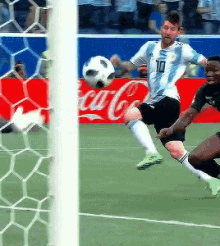

Zapatillas adidas que usa Messi

X SPEEDPORTAL
Las zapatillas adidas que usa Messi en el Mundial de Qatar, conocidas como adidas X Speedportal, son un modelo exclusivo diseñado para reflejar la grandeza del jugador. Estas zapatillas destacan por su base dorada, un color que simboliza éxito y lujo, combinado con las icónicas tres rayas blancas de adidas. Aunque su estructura sigue siendo la clásica de las Speedportal, el diseño interior rinde homenaje al primer Mundial de Messi en 2006, con detalles que evocan sus primeras botas F30.Estilo de la zapatilla.
El color dorado, elegido para la base de las zapatillas, refleja la grandeza y el éxito que define la carrera de Messi. Con las tres rayas blancas de adidas en el lateral, estas zapatillas mantienen el estilo clásico de la marca, pero lo que realmente llama la atención es lo que se esconde en su interior: un homenaje al primer Mundial que jugó Messi en 2006, con detalles que recuerdan las icónicas F30 que utilizó en ese torneo.
Tecnologia des las zapatillas
A nivel técnico, las zapatillas adidas que usa Messi están diseñadas para la velocidad y agilidad, características esenciales en su juego. Las Speedportal ofrecen una tracción óptima y un ajuste preciso, lo que permite moverse con explosividad en el terreno de juego. Aunque no hay grandes innovaciones tecnológicas en este modelo, su ligereza y confort siguen siendo insuperables.